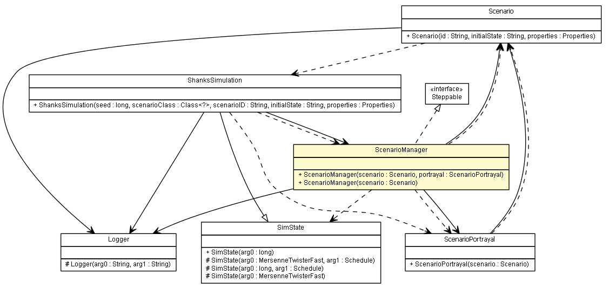

es.upm.dit.gsi.shanks.model
Class ScenarioManager

java.lang.Object
 es.upm.dit.gsi.shanks.model.ScenarioManager
es.upm.dit.gsi.shanks.model.ScenarioManager
- All Implemented Interfaces:
- Serializable, sim.engine.Steppable
public class ScenarioManager
- extends Object
- implements sim.engine.Steppable
- See Also:
- Serialized Form
| Methods inherited from class java.lang.Object |
clone, equals, finalize, getClass, hashCode, notify, notifyAll, toString, wait, wait, wait |
logger
public Logger logger
ScenarioManager
public ScenarioManager(Scenario scenario,
ScenarioPortrayal portrayal)
- Parameters:
scenario - portrayal -
ScenarioManager
public ScenarioManager(Scenario scenario)
- Parameters:
scenario -
getScenario
public Scenario getScenario()
- Returns:
- the scenario
getPortrayal
public ScenarioPortrayal getPortrayal()
- Returns:
- the portrayal
setPortrayal
public void setPortrayal(ScenarioPortrayal portrayal)
step
public void step(sim.engine.SimState state)
- Specified by:
step in interface sim.engine.Steppable
stateMachine
public void stateMachine(ShanksSimulation sim)
throws Exception
- This method implements the state machine of the scenario manager
- Parameters:
sim -
- Throws:
Exception
checkFailures
public void checkFailures(ShanksSimulation sim)
- Parameters:
sim -
Copyright © 2011-2013 Grupo de Sistemas Inteligentes - Universidad Politécnica de Madrid. All Rights Reserved.